Mittag in Leme: Ein Botequim an der Ecke, Fußball im Fernsehen, Picanha auf dem Holzbrett. Samstagmittag in Rio.
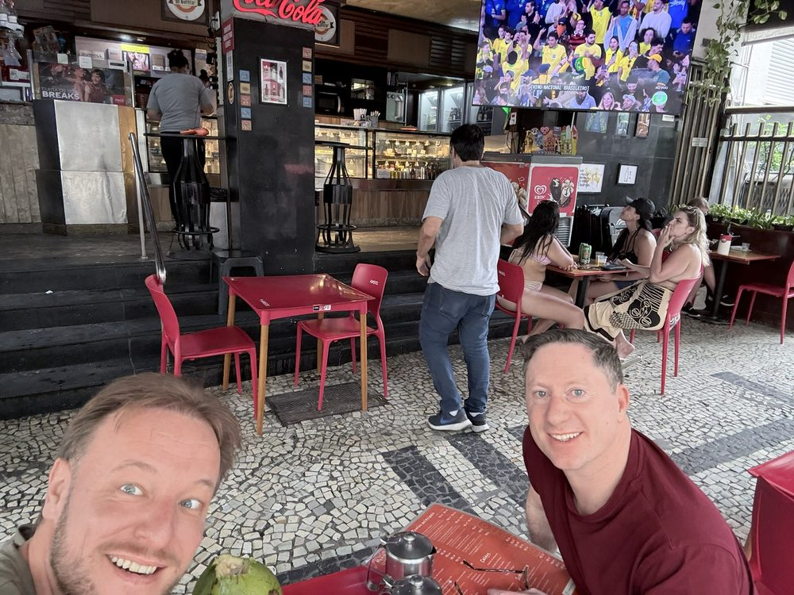
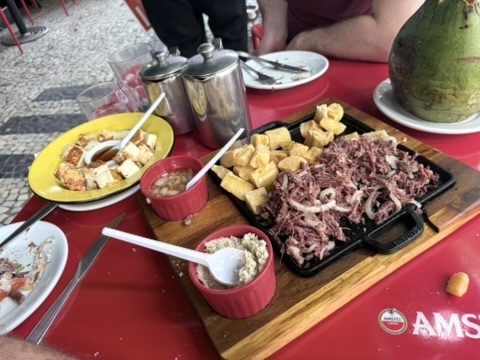
Auf dem Calçadão: Zu Fuß die Copacabana entlang. Das Wellenmuster des Calçadão stammt ursprünglich aus Portugal; der Landschaftsarchitekt Roberto Burle Marx gestaltete die Promenade 1970 neu. Unterwegs: eine riesige gelbe Schuh-Installation am Strand, Trikotverkäufer, Rettungsschwimmer-Posten.
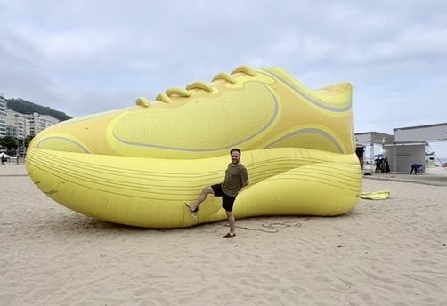
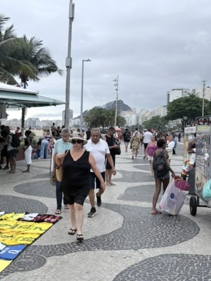
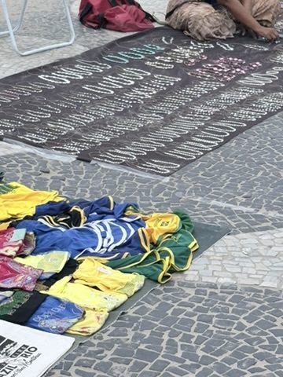
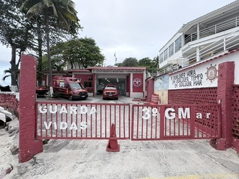
Forte de Copacabana: Am Südende der Copacabana liegt das Fort, 1914 fertiggestellt, mit schweren Krupp-Geschützen in Panzerkuppeln. 1922 begann hier der Aufstand der „18 do Forte", junger Offiziere gegen die Regierung – Auftakt der Tenentismo-Bewegung. Heute Armeemuseum mit dem vielleicht schönsten Blick zurück über die ganze Bucht bis zum Zuckerhut.
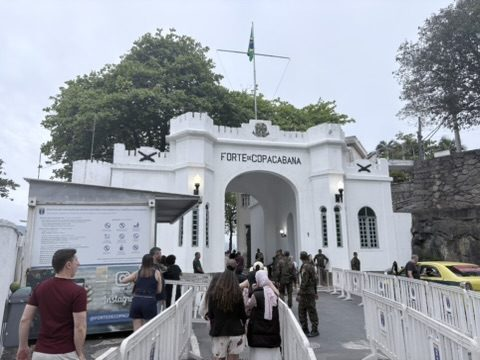
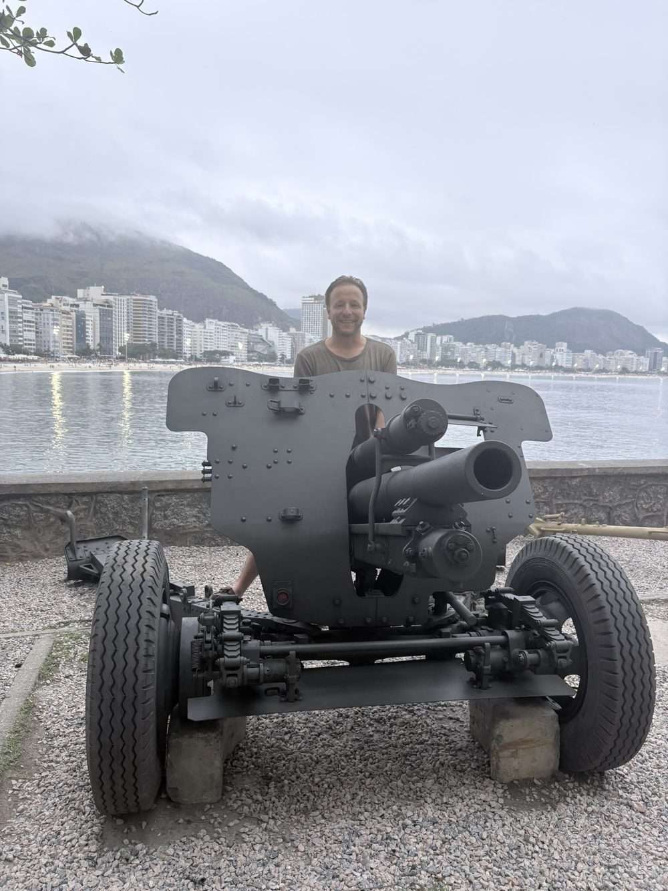
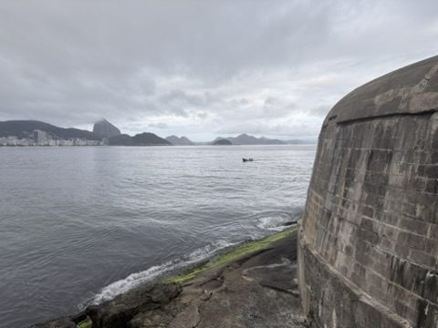
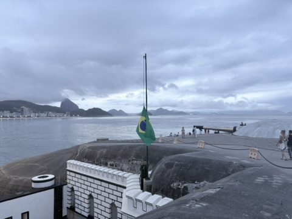
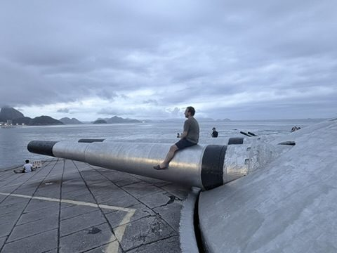
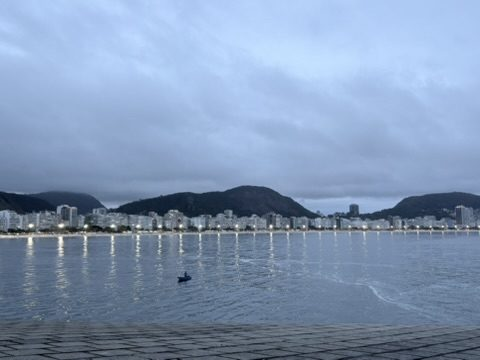
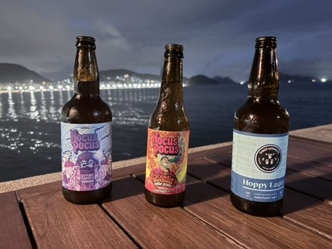
Carlos Drummond de Andrade: Auf dem Rückweg sitzt Brasiliens großer Dichter Carlos Drummond de Andrade als Bronzefigur auf einer Bank – seit 2002, mit Blick aufs Meer. Auf der Lehne sein Vers: „No mar estava escrita uma cidade" – im Meer stand eine Stadt geschrieben.
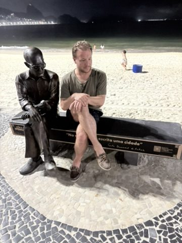
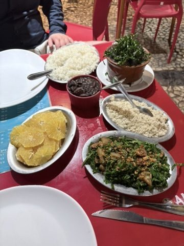